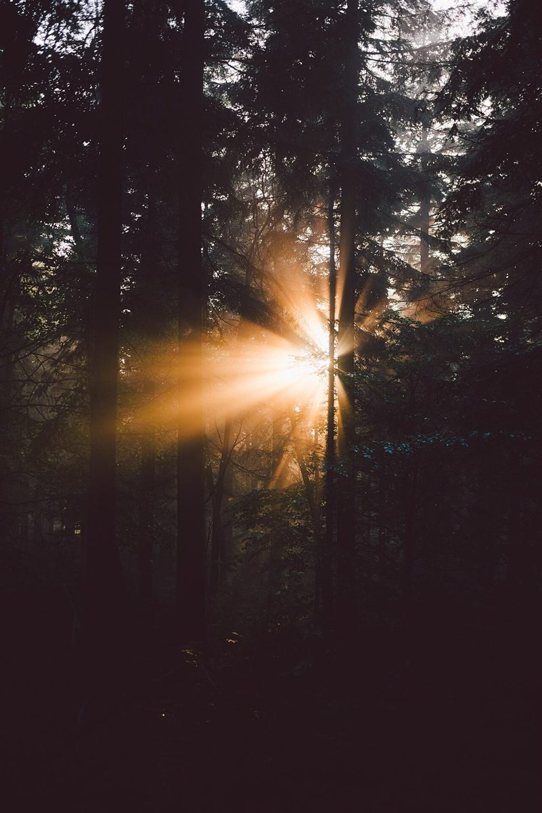
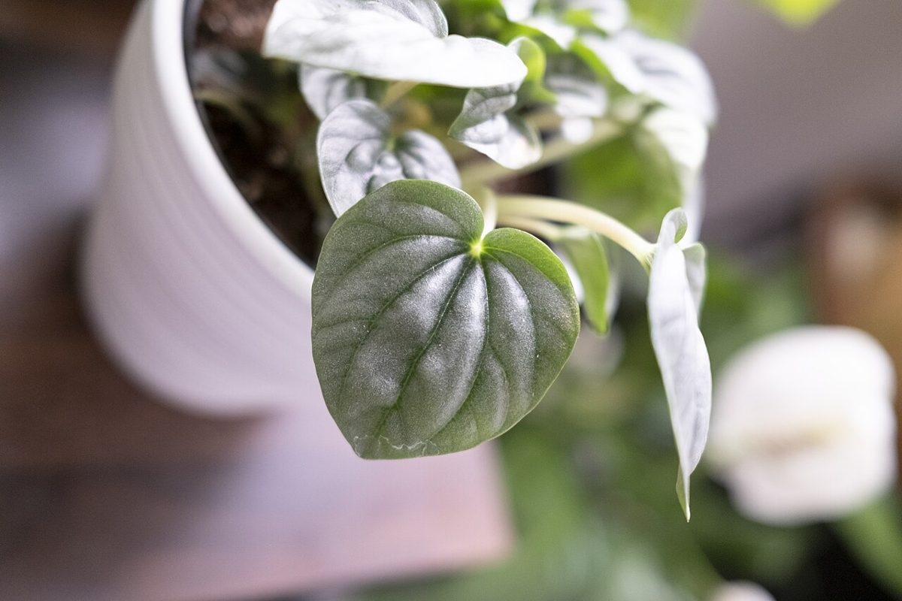

店のこと
店のこと
お店について確認できているのは、所在地とInstagramのアカウントだけです。
このページの「想像してみる」部分は、制作側が想像して書いたものです。お店の実際の様子・考え・メニューとは関係がありません。
確認できていること
- 店名は「kimama na cafe LaLa」、業種はカフェ
- 所在地は鹿児島県指宿市湊1丁目3-3
- 電話番号はなし。連絡はInstagramから
- 営業時間・定休日・メニュー・価格・ご予約・駐車場は準備中

想像してみる
「きまま」という名前から
由来は分かりません。制作側は、予定を決めすぎずにふらりと立ち寄れる場所かもしれない、と想像しました。ただしこれは店名の響きからの連想で、実際のお店の姿ではありません。
